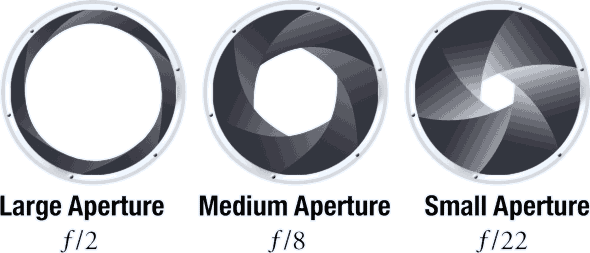

Aperture
Aperture, sometimes called F-Stops, is the opening of your lens that controls how much light can get through. Your aperture works much like the eye, it gets wider to let in more light and smaller to let in less.
Your aperture is measured in stops. One full stop will either double the amount of light or cut it in half. The smaller the number, the more open your aperture is and more light can get in. This may sound backwards, and it takes many people a while to get this straight. If you look at f-stops as fractions, which is what they really are, this concept gets a lot easier to understand. Think of it like this, instead of writing 1/5 we write f/5.
What does the aperture do besides control how much light gets in?
Along with light control, aperture controls depth of field. The bigger the opening (smaller the number) the less depth you have.